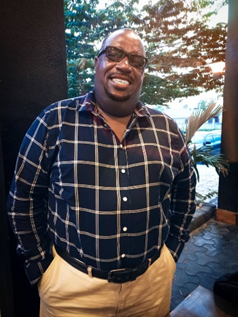
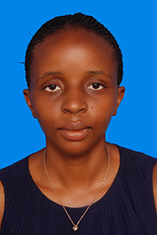
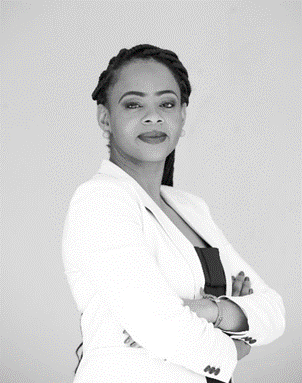
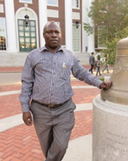
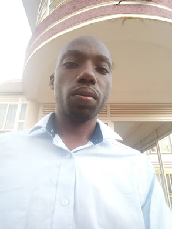
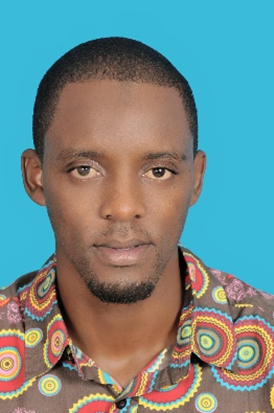

Joseph Tumushabe - Chief Executive Officer is a Demographer, an accomplished mentor, with over-30 year’s research and development consultancy experience that spans across more than 21 African countries. Major interests in people motivation, careers and mentorship of young people, and helping people to realize their goals through research and planning. Oversees CEREDEV Programs and operations.

Lydia Belinda Sandi – Director, young, self-driven, ambitious, and hardworking entrepreneur, with a Degree in Marketing and a Professional Certificate in Marketing (CIM). Lydia has eight-year experience in working with starter campaigns and nurturing them to enviable heights; marketing and network specialist. She won the Tony Elumelu Award 2018 for CEREDEV career development training wing.
Caritas Pesha – Team Leader Research and Consultancy Services. Caritas has over 10+ years of research experience in qualitative and quantitative research across different projects, has carried out in all regions of Tanzania over 80% of the districts enriching our knowledge of the country’s rich cultures and communities. Caritas designs project proposals, prepares research instruments, trains and supervises field teams, and carries out data analysis and report writing. She is an experienced Swahili – English bi-directional and simultaneous translator and transcriber.

Glenda Tambudzai Muzenda is a social justice professional with over a decade of domestic and international experience in ASRHR, human rights, gender equality, gender analysis, and women’s rights. Her focus is on sexuality and gender rights of women, girls and young women the region.
A multi-programme talented professional, she has presented at various conferences and seminars, and has published opinion and commentary pieces in publications across Southern Africa.

Bernard Kakuhikire, Semiour lecturer and retired dean of Management Sciences; Mbarara University of Science and Technology, Uganda. Head Entrepreneurship Development Training and Coordinator, CEREDEV, Uganda.

Stephen Mugarura, CEREDEV Head Statistician and Data Management, Business Management Practices and Life Skills Development.
Mugarura Stephen is a Statistician with 15 years’ experience in survey design, monitoring and evaluation, and analysis skills. I have conducted project evaluations in countries of Uganda, Kenya, Tanzania, Rwanda and Burundi, Southern Sudan, Sudan, Ethiopia, Ghana and Zambia. My areas of focus include agricultural research, trade, public health, education, gender studies and resettlement. Due to my expertise, I have managed some of the biggest cross-sectional and time series databases. From 2010 to 2012, I was entrusted with data management for the biggest Millennium Challenge Corporation resettlement project in the world under Africare Tanzania. In 2016 to 2017, was tasked with the development of the EAC Integration Policy.
Privatus Karugendo – Head Languages and Translation Services;

Johannes George Mulokozi is a Monitoring and Evaluation expert who works with a Non-governmental organisation called Jambo Bukoba based in Tanzania. We use the power of sports to empower the youth and children, my vision is to create a conducive and sustainable environment for children and youth to attain their dreams.